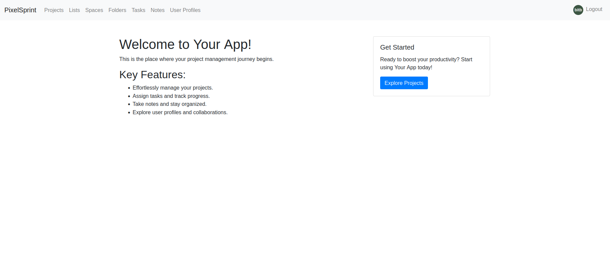
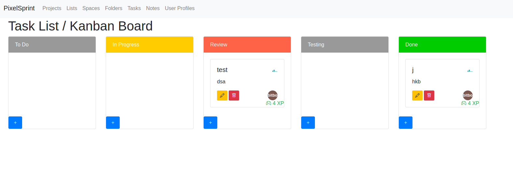
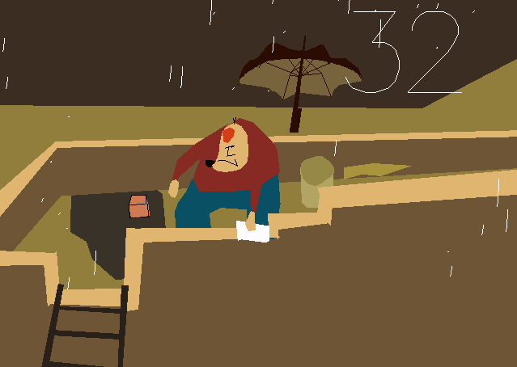

RePaw is a Django REST API powering both a mobile app and a Django webapp about dogs. Connects dog owners with services like grooming, walking, boarding, and veterinary care.
A comprehensive personal finance management application built with Django. Track income and expenses, categorize transactions, view spending analytics with interactive charts, and manage budgets. Features include recurring transactions, export capabilities, and multi-account support.
A full-stack video sharing platform inspired by YouTube. UR8 supports video upload and streaming via FFmpeg processing, user channels, subscriptions, comments, likes/dislikes, and playlists. Built with a robust backend using PostgreSQL and Redis for caching and task queuing.


A full-featured task management application inspired by Agile methodologies. PixelSprint allows teams to create sprints, manage tasks across boards, track progress, and collaborate in real-time. Built with Django on the backend with Celery for async task processing, Bulma for styling, and HTMX for seamless interactions.
A machine learning project that recognizes spoken digits (0-9) using the Free Spoken Digit Dataset (FSDD). Features are extracted using librosa (MFCC, chroma, mel-spectrogram) and classified using a Keras neural network. Includes real-time prediction via pyaudio microphone input.
A photo gallery application built with Angular and TypeScript. Features include image upload, album management, favorites system, and a comprehensive end-to-end testing suite using Angular TestBed and SCSS for styling.
A Kivy-based desktop app that downloads YouTube videos and audio at up to 8K resolution and 320kbps bitrate. Supports single video and full playlist downloads with format selection (mp4, webm, mkv, mp3). Built with yt-dlp and FFmpeg for maximum compatibility. Cross-platform on Windows, macOS, and Linux.
A TypeScript sport tournament organizer for creating and managing brackets, team registration, match scheduling, and score tracking. Supports single-elimination, double-elimination, and round-robin formats. Built with a clean, responsive interface.
A proof-of-concept encrypted database server that processes queries over encrypted data. Demonstrates techniques for query execution on encrypted databases while maintaining data privacy and security.
Various academic and experimental projects spanning multiple languages and paradigms including SQL, Java, Kotlin, Prolog, and HTML.
A classic Pong arcade game recreation built with PyGame. Features include single-player mode with an AI opponent, two-player local multiplayer, score tracking, and increasing difficulty. Built as a rapid prototyping challenge completed in under 3 hours.
A space shooter game built with Python where players navigate a spacecraft through asteroid fields, shoot obstacles, and score points. Features progressive difficulty, particle effects, and responsive controls.
A memory card matching game built with Phaser.js and TypeScript. Flip cards on a 4×4 grid to find matching pairs based on project technology tags. Track your match count, flips, and time. Features smooth flip animations, match/mismatch feedback, and a victory overlay upon completion. Accessible via the "M" portal in Project Park or directly from the title screen.
A trivia quiz game built with Phaser.js and TypeScript. Answer 6 multiple-choice questions drawn from the portfolio's job experience and education data. Each question has 4 shuffled choices, with correct/incorrect feedback after each answer. Final score is displayed on a results screen. Accessible via the "Q" portal in Education Campus or directly from the title screen.
A Flappy Bird-style arcade game built with Phaser.js and TypeScript. Navigate a bird through pipes labeled with job roles and project titles from the portfolio. Features gravity-based physics, collision detection, progressive difficulty, and a "Jobs Completed" scoring system. Accessible via the "F" portal in Job District or directly from the title screen.
A complete Tetris clone built with Phaser.js and TypeScript. Features 7 tetromino shapes, each labeled with a project name from the portfolio. Includes a 10×20 grid, hard drop, wall kick system, 5-level speed progression, line scoring, and pause functionality. Accessible via the "T" portal in Project Park or directly from the title screen.
A multi-phase army simulation game built with Phaser.js and TypeScript. Experience 5 rotating phases across 2 day cycles: Camera Room (CCTV anomaly detection), Field Patrol (stealth with vision cones), Recon (binocular target marking), Off-duty Basketball (timing-based power bar shooting), and Debrief (daily score review). Stats including score, morale, and fatigue persist across cycles. Accessible via the "B" portal in Job District or directly from the title screen.
A fully-featured Snake game implemented in TypeScript using the Phaser game framework. Navigate a growing snake across a 24×18 grid to collect all 49 skill orbs, each color-coded by category (Frontend, Backend, Databases, DevOps, Languages, Game Dev, AI/ML). Features progressive speed increase, category-colored food items, and a victory condition upon collecting all skills.
A breakout-style arcade game built with Phaser.js and TypeScript. Control a paddle to bounce a ball into blocks labeled with 20 common coding bugs across 5 categories: Runtime Errors (Null Pointer, Stack Overflow, Memory Leak, Out of Bounds), Logic Bugs (Off-by-One, Infinite Loop, Race Condition, Deadlock), Security Holes (SQL Injection, XSS Attack, Buffer Overflow, Hardcoded Creds), Code Smells (Spaghetti Code, Magic Numbers, Circular Dep, Callback Hell), and Async Bugs (Uncaught Promise, Hoisting, Type Coercion, Floating Point). Track your score, manage 3 lives, and win when all bugs are squashed.
A Pacman-style maze game built with Phaser.js and TypeScript. Navigate a 28x20 grid collecting 49 skill dots and 4 power pellets while avoiding 4 job-themed ghosts, each with distinct movement AI matching their role: Frontend (chases), Backend (patrols), Databases (ambushes), DevOps (random). Power pellets let you eat ghosts for bonus points. Features smooth mouth animation, score popups, 3 lives, and a victory condition when all skills are collected.
A full Super Mario-style platformer built with Phaser.js and TypeScript. Control a developer protagonist through a 5200px scrolling world with gravity, jumping, and camera-follow. Stomp on Bug enemies (green, ground patrol) and Deadline enemies (red, elevated patrol) to kill them. Collect 26 coin pickups for +10 points each. Enter 3 green pipes to descend into underground Focus Mode chambers — dark overlays with glow effects, intense pulsing particles, and float-up byte collectibles (+50). Focus Mode has an 18s timer, faster movement speed (240 vs 180), and resets upon exit. Reach the Sprint End flagpole at the end of the level to win! 3 lives, respawn on death, game over at 0 lives.
A Donkey Kong-inspired vertical climber built with Phaser.js and TypeScript. The Tester awaits at the top of Bug Tower, hurling bugs down through 6 levels of platforms connected by ladders. Use arrow keys to move left/right, jump (Up/Space/W) to reach higher platforms, and climb ladders by pressing Up when overlapping them. Bugs bounce and roll along platforms — dodge them or die! Collect coins for bonus points. The bug spawn rate increases over time, making each climb more intense. 3 lives, score tracking, and a satisfying victory when you reach the top platform to confront the Tester.
An interactive 2D portfolio explorer built from scratch with Phaser.js and TypeScript. Walk through an 1800×1400 overworld featuring 5 themed zones (Home, Projects, Jobs, Skills, Education), each with unique NPCs, buildings, and interactive objects. Includes a real-time day/night cycle, minimap navigation, virtual joystick for mobile, and 10 built-in minigames: Skill Snake (49 skills), Project Match (memory), Campus Quiz (trivia), Flappy Job (flappy bird), Tetris Projects, Base Ops (army sim), Bug Breaker (breakout), Skill Pacman (maze chase), Dev Mario (platformer), and Donkey Kong (bug tower climber). All textures are procedurally generated — zero external image assets required.
A fully 3D interactive portfolio explorer built with Three.js and TypeScript. Navigate an 1800×1400 3D terrain using WASD controls with a third-person orbit camera (right-click drag to rotate). Features a capsule humanoid player with idle body bob, interactive NPCs with floating name badges, skill crystals (colored cones) for each of 7 categories, real-time day/night cycle, minimap, and fade transitions between scenes. All geometry is procedural — no external 3D model files required.
An endless runner minigame built with Three.js and TypeScript, embedded inside the Bio Explorer 3D world. Control a developer character running down an infinite corridor divided into 3 lanes. Use arrow keys (or A/D) to dodge obstacles: Bug (green cube), Spaghetti (yellow tangle), and Tech Debt (red stack). Collect Clean Code (cyan vial), Tests (blue checkmark), and Docs (orange scroll) for bonus points. Speed increases continuously from a base pace to a frantic max. Features procedural geometry (no external assets), lane-switch animation with body bob, particle effects on collection, and a game-over screen with final sprint distance. Accessible in-game via the CODE SPRINT terminal NPC in the 3D Overworld.

OpenGL-based C++ application for building waving flag simulations and real-time animations.